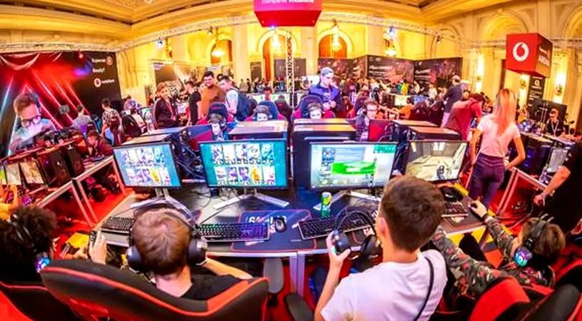

Campionatul Mondial de Esports începe la Iaşi; sunt aşteptaţi jucători din 120 de ţări
Peste 700 de jucători din 120 de ţări din toate colţurile lumii se vor confrunta în finalele Campionatului Mondial de Esports, în perioada 24 august- 3 septembrie, la Iaşi.
Reprezentanţii Primăriei Iaşi au declarat, miercuri, în cadrul unei conferinţe de presă că acest Campionat
Mondial de Esports este important nu doar pentru tânăra generaţie.
"Este un element de noutate absolută, pe care putem să îl fructificăm şi avem prilejul să îl organizăm aşa
cum se cuvine. Proiectul acesta s-a născut ca o fiinţă vie, după o foarte lungă perioadă de incubare. În
cele din urmă a ajuns aici. Nu este ieftin, nu este uşor, nu este la îndemâna oricui. Suntem de-abia la
jumătatea drumului, deşi campionatul începe peste câteva zile. Menţinerea unui nivel ridicat de organizare a
unui campionat mondial, încercarea de a împăca toate gusturile celor veniţi din toate colţurile lumii în
tabieturile unui oraş care creşte în flancul de est al Europei, încercarea de a răspunde tuturor
provocărilor, nu este uşor", a declarat primarul Mihai Chirica, în cadrul unei conferinţe de presă.
Viceprimarul Daniel Juravle a declarat că acest Campionat Mondial de Esports vine şi cu o serie de
evenimente cultural-artistice, începând cu ceremonia de deschidere, care va avea loc vineri seara, de la ora
21,00. În cadrul acestei ceremonii vor fi spectacole de artificii, drone, 3D Mapping, eroi digitali care
prind viaţă.
"Au fost luni şi zile de foc aici la Iaşi, pentru pregătirea acestui eveniment. Tot ceea ce se petrece în
următoarea săptămână, începând cu ziua de vineri, este făcut pentru oraş şi pentru viitorul lui. Trebuie să
ne bucurăm cu toţii de acest eveniment. Vor fi evenimente pentru toate gusturile, începând de la jocuri pe
calculator care, bineînţeles, vor surprinde în mare parte a evenimentului, până la chestiuni educative,
sport fizic", a spus Juravle.
Managerul Campionatului Mondial de Esports, Cristian Nistor, a afirmat că deşi campionatul mondial de
Esports este o noutate pentru ieşeni, astfel de evenimente fac parte deja din viaţa noastră.
"Acest univers de gaming, influenceri, industrii creative face parte din viaţa noastră. Ar fi păcat să nu
profităm de această oportunitate. Printre surprizele pe care le pregătim sunt jocul cu drone, proiecţiile de
video mapping care vor fi pe Palatul Culturii, efectele pirotehnice din timpul concertelor şi foarte mulţi
influenceri care vor fi aici să bucure publicul larg", a menţionat el.
În perioada 24 august - 3 septembrie, 700 de jucători profesionişti din întreaga lume ajung la Iaşi la
Campionatul Mondial de Esports, România fiind reprezentată de jucători valoroşi, cu rezultate importante în
competiţiile internaţionale.
Conform organizatorilor, începând cu data de 26 august, în competiţiile Campionatului Mondial de Esports
pentru titlul de campioni mondiali şi premii totale de 500.000 de dolari au loc: trei competiţii pe echipe
pentru jocuri de PC, Counter-Strike: Global Offensive, Counter-Strike: Global Offensive Female si Dota 2,
două competiţii pentru jocuri de consolă, eFootball şi Tekken şi două competiţii pentru jocuri mobile, PUBG
Mobile şi Mobile Legends.
Echipa ce va reprezenta România la competiţia de Dota 2 este condusă de Omar "w33" Aliwi, jucător născut şi
crescut în România, finalist al celei mai mari competiţii de esports din lume, The International.
Reprezentativa României este compusă din Angel "Flash" Niamtu, Daniel "kaan" Heisu, Radu Ionuţ "bnc" Muşat
şi Mihai "Cancel" Antonio.
Cea mai bună jucătoare de CS:GO din lume este românca Ana Dumbravă, care va fi căpitanul reprezentativei
feminine de CS:GO a României, compusă din Lavinia "Icy" Banica, Melissa "meli" Aylin, Ramona "ratons" Dodu
şi Emilia "Emmy" Gratie.
În cadrul competiţiei de eFootbal căpitanul echipei României este Adrian Urmă, jucător profesionist şi fost
căpitan al echipei AS Roma, semifinalist al ediţiei de UEFA Euro 2020.
Echipa formată din valoroşii jucători români ai Nexus Gaming, Blytz, Xellow, Btn, Launx şi Sound, se va
lupta pentru titlu mondial de CS:GO.
Membrii echipei Iconic Crew vor reprezenta România în competiţia de Mobile Legends. Formată din Bloodz,
Prinsx, Kcorei, Bucatti şi Jinn, alcătuiesc cel mai puternic squad dedicat acestui joc.
România va fi reprezentată în competiţia de PUBG Mobile de jucătorii echipei Nexus Gaming, formată din
Dorin, Octavian, Exo şi Kapahala, care în urmă cu câteva luni a devenit vicecampioană europeană la PUBG
Mobile Pro League.
Reprezentantul României în competiţia Tekken va fi Andrei Lazăr, care a câştigat de trei ori turneul
european Viens On Doz Tekken Weekly.
Campionatul Mondial de Esports este parte a Digital Throne, un festival care se va desfăşura timp de 10
zile, în cadrul căruia vor avea loc, în zona Palatului Culturii din Iaşi, activităţi conexe şi evenimente,
precum Comic Con, talkuri despre industria de esports, workshopuri educative şi showmatchuri cu invitaţi
speciali. Festivitatea de închidere a Digital Throne are loc pe 1-3 septembrie cu o serie de concerte cu
unii din cei mai apreciaţi artişti internaţionali şi locali: Lost Frenquencies, Tom Odell, JP Cooper, Delia,
B.U.G. Mafia, Subcarpaţi şi mulţi alţii. AGERPRES/(A, AS, autor: Daniela Malache, editor: Antonia Niţă,
editor online: Ada Vîlceanu)